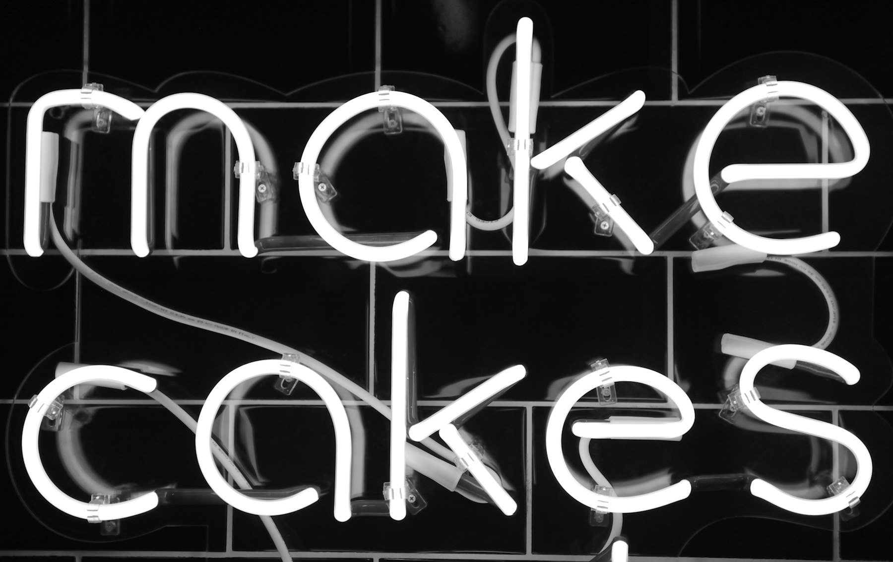

TL;DR
This pillar article identifies practical side hustles tailored for busy professionals who are interested in maximizing their evening hours for additional income. Key considerations include evaluating personal strengths, understanding market demands, and creating a balanced approach to prevent burnout. Take the time to choose wisely, ensuring that side hustles align with your financial and personal wellbeing goals.
Who This is For and the Trigger Moment
This article is geared towards working professionals—those who balance their full-time jobs while seeking additional income streams to enhance their financial security or achieve specific goals. This audience typically consists of young professionals, mid-career individuals, or even seasoned experts who find themselves facing various triggers that spark the desire for side income. Common scenarios include rising living costs, unexpected bills, or a desire for financial freedom to pursue personal projects, vacations, or retirement planning. Recognizing these factors can help individuals better understand their motivations and apply a focused approach towards selecting suitable side hustles.
What Makes the Choice Expensive
Choosing to pursue a side hustle can come with hidden costs and sacrifices that are often underestimated. Time is a critical resource, and every hour spent on a side project is one less hour for personal time or relaxation. Balancing these priorities can create a significant emotional toll, leading to stress and potential burnout. Professionals often overlook the tradeoff between immediate income and long-term well-being. For some, the extra earnings may not be worth sacrificing quality family time or personal hobbies. This means each decision must weigh the potential income against personal satisfaction, mental health, and overall time allocation. Often, the mistake beginners make is diving into an opportunity that looks lucrative without fully assessing how it can negatively affect their mental health or time with loved ones. Ultimately, your time is a non-renewable resource, and every tradeoff should be carefully considered.
The Comparison or Workflow Logic
With numerous options available, comparing side hustles based on efficiency and income potential is essential for professionals. Some lucrative side hustles include freelance writing, graphic design, consulting, or creating online courses. Each of these options requires a different level of time commitment and expertise. For instance, freelance writing might offer a higher hourly wage but demand better writing skills and experience. On the other hand, consulting can yield substantial returns, but you might need to work late into the evening to prepare client materials. An effective way to evaluate these options is through a comparison chart that considers factors like potential income, hourly investment, and skill level required. Suppose you estimate that freelance writing could earn you $25 per hour but requires 10 hours a week. If you compare that to consulting which might yield $75 an hour but only provide you with 5 hours of work per week, the decision becomes clearer. The decision logic must encompass an individual's strengths and available time.
Implementation Steps or Evaluation Factors

Starting a side hustle can be daunting, but breaking down the process into manageable steps can simplify the journey. Here’s a streamlined approach: 1. **Identify your skills and interests**—Choose a side hustle that resonates with your expertise and passion. 2. **Market Research**—Investigate potential demand for your side project in the marketplace; platforms like Fiverr or Upwork can provide insights. 3. **Initial Steps**—Create a detailed plan outlining your target audience, marketing strategies, and financial projections. 4. **Test the Waters**—Start with a small commitment, perhaps 5-10 hours a week, to gauge your interest and potential income. 5. **Evaluate**—Constantly assess your workload, income, and personal satisfaction. Ensure the effort aligns with your long-term goals. The risk here is overcommitting too soon, leading to burnout. Instead, allow space to adjust and make this a rewarding journey.
Decision Rules
Establishing clear criteria can streamline the decision-making process for selecting the right side hustle. Consider factors such as income potential, time commitment, and personal interest. Create a pros and cons list for each option, incorporating individual metrics to facilitate your selection. For example, if you’re considering both affiliate marketing and freelance designing, weigh potential earnings, existing skills, and how much time you can realistically dedicate after work. Look for patterns in past experiences—what made previous ventures rewarding, or what hurdles did they present? Some professionals might prioritize financial goals, while others focus on mental stimulation or skill development; understanding what matters most to you will guide your side hustle journey.
Mistakes and Failure Modes

Pursuing a side hustle can lead to several common pitfalls. A major mistake many beginners make is underestimating the time commitment required for success; they enter a venture believing it is a part-time commitment only to realize it’s consuming their evenings and weekends. Ignoring personal limits can result in exhaustion, and the quality of work may suffer, impacting both the side hustle and full-time job. Stress management becomes vital; set boundaries on how much time you can realistically commit to avoid feeling overwhelmed. Additionally, failing to track finances can lead to unanswered questions about profitability. Therefore, be diligent about recording income and expenses, ensuring you remain informed about your financial status throughout the side hustle journey.
When Not to Use This
While side hustles offer immense benefits, there are situations where pursuing additional income might not be advantageous. If you are already experiencing stress or burnout from your primary job, adding a side hustle could exacerbate these conditions. Signs of burnout include chronic fatigue, a sense of detachment from work, and an overall lack of motivation. Professionals in high-stress fields, such as healthcare or emergency services, should carefully evaluate their capacity before embarking on this venture. Additionally, if your current financial stability is adequate and you’re not chasing additional goals, it might be wise to maintain a work-life balance and rejuvenate through leisure rather than engaging in a potentially stressful side hustle.
Copyable Checklist or Summary Framework
To help you take decisive action towards starting a side hustle, here’s a concise checklist: 1. **Identify Your Why**: Understand why you want a side hustle. Is it for financial stability, personal fulfillment, or another reason? 2. **Evaluate Your Strengths**: List your skills and how they relate to potential side hustles. 3. **Research the Market**: Assess if there is demand for what you can offer. 4. **Start Small**: Commit a manageable number of hours weekly to test your side project. 5. **Keep Records**: Document your tasks, time invested, earnings, and any lessons learned. 6. **Set Boundaries**: Establish a clear separation between your side hustle and personal time to maintain overall well-being. 7. **Review Regularly**: Frequently assess your commitment and engagement to adjust or pivot if necessary. This checklist acts as a roadmap that can guide you through each step of the side hustle journey, ensuring you're on the right path.
FAQ
What are the best side hustles for full-time professionals?
Some of the best side hustles include freelance writing, online tutoring, graphic design, affiliate marketing, and creating online courses. The best option often aligns with your skills and time availability.
How much time do I need to invest in a side hustle to make it worthwhile?
Realistically, investing 5 to 10 hours per week during the initial stages can provide insight into its viability. Adjustments can be made based on results and interest levels.
Can a side hustle lead to burnout?
Yes, especially if you overcommit or don’t balance your side project with personal time. Monitoring stress signals and maintaining healthy boundaries are crucial.
What if I'm not confident in my skills for a side hustle?
Consider starting with a low-risk venture that matches your current abilities while investing in skill development, such as online courses or workshops.
How do I keep motivated in a side hustle?
Goal-setting, regular assessment of progress, and finding community or partnerships within your side hustle can enhance motivation and sustain interest.
Search more articles
Find related tools, workflows, and guides.
Photo credits
- Photo 2: Towfiqu barbhuiya via Unsplash
- Photo 4: Kelly Sikkema via Unsplash
- Photo 5: Shirly Niv Marton via Unsplash
- Photo 6: Anton Belashov via Unsplash
- Photo 8: Garrhet Sampson via Unsplash